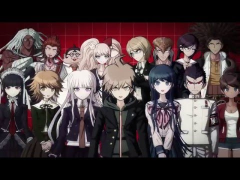
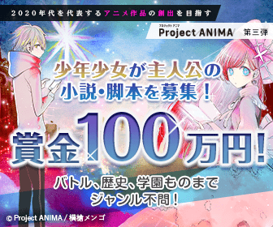

超高校級の高校生たちが殺し合い！？「ダンガンロンパ」の魅力とは！？
アニメ ゲーム ダンガンロンパスポンサーリンク
「ダンガンロンパ」シリーズのナンバリング！
主に携帯型ゲーム機をプラットフォームとしたシリーズで、現在シリーズ本編が3作、外伝作品が1作発売されており、他に他媒体で関連作品が多数販売・公開されている。

シリーズの主軸となるナンバリング作品はミステリー・推理要素が中心のアクション要素を含んだアドベンチャーゲームで、公式ではジャンルを「ハイスピード推理アクション」と命名している。現在までに発売されている2作共に、「超高校級」と呼ばれる各々類稀な才能を持つ個性的な生徒たちが、「コロシアイ」と呼ばれる極限生活を強制され、その結果他の生徒の誰かを殺してしまった真犯人の生徒を「学級裁判」と呼ばれる議論と投票で暴き、殺人で殺された生徒・殺人を暴かれ「おしおき」と称して処刑された生徒を失いながらゲームが進行していく。物語を読み進めるアドベンチャーゲーム要素のほかに、学級裁判で他の生徒と議論する際にアクションゲーム要素が挿入されている。
「創作論破」もかなり人気！
タイトルの「ダンガンロンパ」は「弾丸論破」とされ、この漢字表記を名称に用いた公認グッズも存在する[1]。
シリーズのマスコットキャラクターとして、左右半身が白黒に塗られたクマのキャラクター「モノクマ」を毎作登場させている。モノクマは作中の「コロシアイ」を主導する悪役であり、ユーモラスながら悪辣な言動・行動で個性を発揮すると共に、担当声優としてアニメ『ドラえもん（第2作第1期）』で広く知られる大山のぶ代を起用した話題性も相まって、シリーズを代表する立ち位置として強く定着している。 なお、2016年6月の舞台版3作目（1作目の再演）より、モノクマの声は全メディア作品でTARAKOが引き継ぐ[2]。
各ゲーム作品に共通して、寺澤善徳（プロデュース）、小高和剛（シナリオ）、小松崎類（キャラクターデザイン）がスタッフとして関与している。
スポンサーリンク
